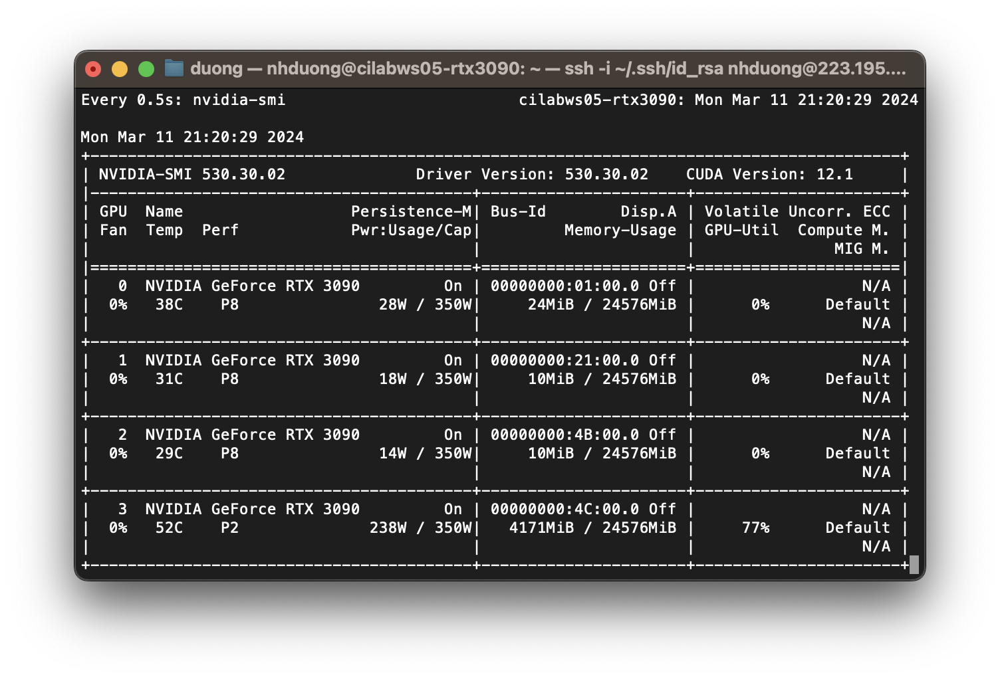
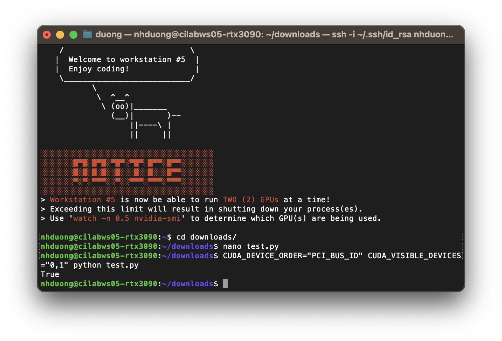

created by Duong Nguyen
last update 2024-03-11
To use a CILab workstation for research, you need to set up an environment on it first. This document will guide you through the process.
ssh your_username@server_ip -p 1004Here,
your_username is your username and server_ip is the IP address of the workstation, and -p 1004 provides the port number.
nvidia-smiAs shown in the figure below, this workstation has 4 GPUs, one of which is being used by another user.

wget command in a terminal. For example,wget https://repo.anaconda.com/archive/Anaconda3-2023.09-0-Linux-x86_64.sh
bash Anaconda3-2023.09-0-Linux-x86_64.sh
conda command in a terminalconda create -n your_env_name
conda activate your_env_name
pip install torch torchvision torchaudioNow you are ready to develop your very first project on the workstation!
nano test.pythen press
Enterimport torch print(torch.cuda.is_available())
Ctrl+X (Windows/Linux) or control+X (Mac), then press Y and EnterEnterCUDA_DEVICE_ORDER="PCI_BUS_ID" CUDA_VISIBLE_DEVICES="0,1" python test.py
In the command above,CUDA_DEVICE_ORDER="PCI_BUS_ID"andCUDA_VISIBLE_DEVICES="0,1"are important. They tell the system to use GPU #0 and #1 to run the code. Please specify the GPU number you want to use accordingly and you should not choose the ones that are being used by others. In general, only one GPU, e.g.,CUDA_VISIBLE_DEVICES="0", should be enough for most of the tasks.
As shown in the figure below, the output is True, which means at least one GPU is available.

For data storage, a user can access the following directories:
/home/your_username: your home directory/media/.../your_username: your external hard driveFor the most part, you should store datasets in the external hard drive while keeping your codes in the home directory.
Sometimes, you may want to run a program in the background so that you can close the terminal without stopping it. To run a program in the background, use the command below withnohup your_program &. Note that all the outputs will be saved in a file callednohup.outin the current directory. To terminate the program, look for its process ID (PID) viaps -ef | grep test.pyand kill it withkill -9 PID.
CUDA_DEVICE_ORDER="PCI_BUS_ID" CUDA_VISIBLE_DEVICES="1" nohup python test.py &